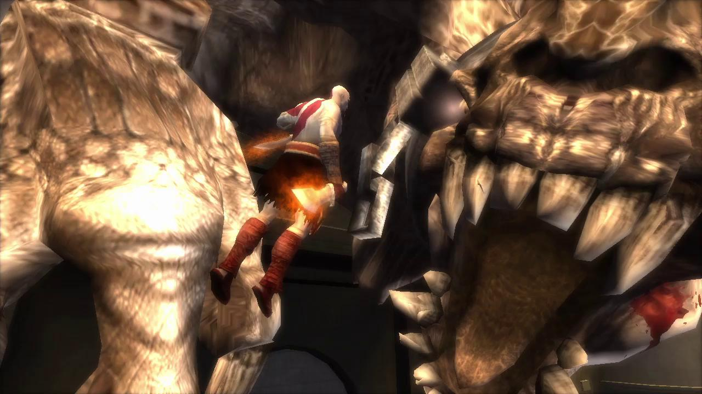

" Kratos follows his nigthmare but this one is different which he can change "
* The Oracle foretold that the demise of Olympus would come not from the Titans; but by a Marked Warrior, a mortal. The Olympian Gods Zeus and Ares believed this warrior to be Deimos, brother of Kratos, due to his strange birthmarks. Ares sieges a village of Sparta and interrupts the childhood training of Kratos and Deimos, with Athena on hand to watch over him, and kidnaps Deimos. Kratos attempts to stop Ares but is swept aside and scarred across his right eye by the violent Olympian. Ares prepares to kill the young Kratos for attacking him. Athena stops Ares and tells him they only came for the Marked Warrior, not to take the boy's life. Taken to the Domain of Death, Deimos is imprisoned and tortured by the God of Death, Thanatos.
* Years later, Kratos, the Ghost of Sparta, has defeated and killed Ares and taken his place as the new God of War on Mount Olympus. Still haunted by visions of his mortal past, Kratos decides - against the advice of the Goddess Athena - to explore his past and travels to the Temple of Poseidon, located within the city of Atlantis. Despite Poseidon's best efforts to prevent Kratos from reaching his city, including sending the monster Scylla, Kratos reaches Atlantis. After a series of confrontations, Kratos kills Scylla. Kratos eventually locates his ailing mother, Callisto, who attempts to reveal to him the identity of his father. Kratos only hears very weak and faint noises, but she manages to tell him that his brother is alive and tormented in Death's Domain, but that he first needs to go to Ares' temple in Sparta. When Callisto is suddenly transformed into a hideous beast, Kratos is forced to battle her. Before dying, Callisto thanks Kratos and beseeches him to seek out his brother Deimos. He also encounters and frees the trapped Titan Thera, which causes a flood that destroys Atlantis. In his journey to Sparta, he also meets the Grave Digger again, who warns him not to alienate the Gods.
* While traveling through the Aronia Pass, Kratos meets Erinys, Thanatos' daughter. He fights and kills Erinys, and arrives in Sparta where he is praised by the people. While on his way to the Temple of Ares he witnesses a group of Spartans, led by the Last Spartan, tearing down a statue of Ares to replace it with one of Kratos. Kratos then goes to the Jails of Sparta where he chases a dissenter loyal to Ares who tries to kill Kratos by releasing the Piraeus Lion. However, Kratos fights and kills both foes. He returns to the Temple of Ares and after an encounter with a ghost-like form of his younger self, he learns he must return to Atlantis and find Death's Domain. Kratos then accepts his former weapons, the Arms of Sparta, as a gift from the Last Spartan, and departs. After Kratos leaves Sparta, he returns to Atlantis but when his ship draws closer to the sunken city, minions of Poseidon sink Kratos' ship and kill the crew. After nearly drowning, a statue of Poseidon possessed by the Sea God himself tells the Spartan he will pay for sinking his kingdom and he will not forget this event. Kratos then traverses through the city's ruin and eventually locates the Gateway to Death's Domain.
* Entering Death's Domain, Kratos eventually locates and frees his imprisoned brother Deimos. Enraged with Kratos' failure to rescue him sooner, Deimos says he will never forgive Kratos, and attacks him, only to have Thanatos intervene. Taking Deimos to the Suicide Bluffs, Deimos almost falls off the cliff. Kratos saves his brother, and the two reconcile. After giving Deimos the Arms of Sparta, Kratos and Deimos fight Thanatos together. Before the fight, Thanatos remarks that Kratos was the "Marked Warrior" the Oracle spoke of, the mark being the ashes of his wife and daughter fastened to his skin and that Ares chose poorly for taking Deimos instead of him. During the fight, Thanatos transforms into a black monster and kills Deimos, but is then destroyed by an enraged Kratos. Kratos then carries the body of his fallen brother up the mountain where the enigmatic Grave Digger (who already had a grave prepared) buries Deimos, with Kratos using the Arms of Sparta as a grave marker. The Ghost of Sparta then goes to the Suicide Bluffs where, after briefly pondering suicide, he asks himself "By the gods, what have I become?" The Gravedigger responds that he has become "Death...the Destroyer of Worlds." Kratos turns to look at the Grave Digger who has disappeared just as Athena comes out of the portal. She tells him that his ties to the mortal world are now severed and he is ready to become a God. Athena attempts to elevate Kratos to full Godhood only to have the Spartan stop her from doing so. He then chastises Athena, asking her if his grievances were just a game for her. Kratos then returns to Olympus stating to Athena that the gods will pay for what they have done. As Kratos returns, Athena quietly asks "Forgive me...brother", marking the first time Athena acknowledges they are siblings.
* In a post-credits scene, the Grave Digger is shown laying Callisto to her grave, saying "Now, only one remains." A third grave is seen, implied to have been dug for Kratos. The scene shifts to Kratos on his throne, wearing his newly forged armor, furious and determined to exact vengeance on the Gods. (It is widely assumed that this leads up to the beginning of God of War II, as Kratos, driven by the rage of the loss of his brother and mother, leads the Spartans into a vicious battle to take over the city of Rhodes. Zeus, who has been poisoned uncontrollably with Fear after witnessing Kratos murder the God of Death, later tricks Kratos and kills him, fulfilling his statement that he was going to kill the remaining person in the family he should have never made.
This leads to GOD OF WAR II